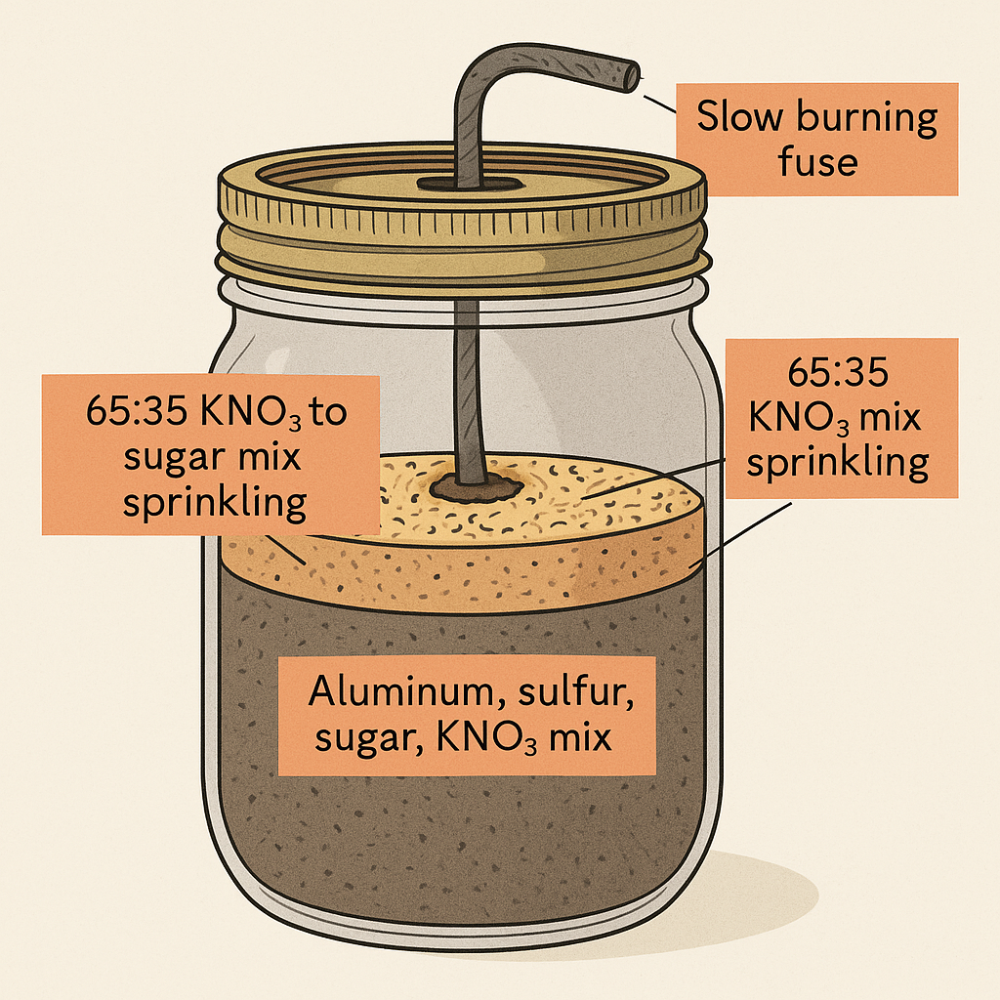

Mixture Composition
- Total weight: 43 grams
- Components included: aluminum, sulfur, sugar, and potassium nitrate (KNO₃)
- A secondary mixture of KNO₃ and sugar in a 65:35 ratio was sprinkled on top
Setup
- The full mixture was contained inside a standard Mason jar
- A slow-burning fuse was inserted at the top of the jar to serve as the ignition source
Diagram

Test Footage
Observations
- The Mason jar exploded almost instantly before all material could ignite
- A large flame was observed, presumably from the aluminum mixture igniting afterwards
- The explosion created a loud, but not deafening boom that echoed nearly four times
Safety Notes
- Testing should be done in a safe, open area with proper shielding
- Use remote ignition methods and maintain a safe distance